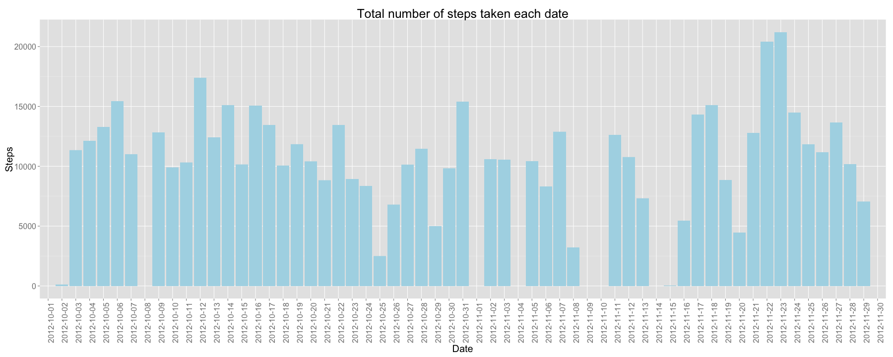
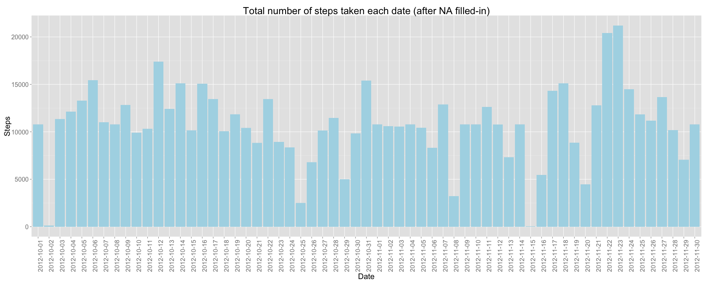

SCRIPT: PA1_template.Rmd
AUTHOR: Isabel M. Izquierdo Martin (imim)
DATE: 11/08/2014
OUTPUT: PA1_template.md, PA1_template.html files plus figure directory with the images
PURPOSE: Report answering some questions about "activity" data
DATA SOURCE: https://d396qusza40orc.cloudfront.net/repdata%2Fdata%2Factivity.zip
INPUT DATA: activity.csv, after unzipped them from the data source
LIMITATIONS: activity.csv, and the current R Markdown Script must be in the working directory
EXECUTION: processing the R markdown file with knit2html() function in R (from the knitr package) by running the function from the console:
library(knitr)
library(markdown)
knit2html("PA1_template.Rmd", "PA1_template.html", options="")
knit2html("PA1_template.Rmd", "PA1_template.md", options="")
Sys.setlocale("LC_TIME", "en_US.UTF-8")
InputDataNoNA <- read.csv("activity.csv")
InputDataNoNA$date <- as.Date(InputDataNoNA$date)
# In order to print tables in the report
library(xtable)
TableInputData <- xtable(summary(InputDataNoNA))
print(TableInputData, type = "html")
| steps | date | interval | |
|---|---|---|---|
| 1 | Min. : 0.00 | Min. :2012-10-01 | Min. : 0.0 |
| 2 | 1st Qu.: 0.00 | 1st Qu.:2012-10-16 | 1st Qu.: 588.8 |
| 3 | Median : 0.00 | Median :2012-10-31 | Median :1177.5 |
| 4 | Mean : 37.38 | Mean :2012-10-31 | Mean :1177.5 |
| 5 | 3rd Qu.: 12.00 | 3rd Qu.:2012-11-15 | 3rd Qu.:1766.2 |
| 6 | Max. :806.00 | Max. :2012-11-30 | Max. :2355.0 |
| 7 | NA's :2304 |
For this part of the assignment, the missing values in the dataset are ignored.
# For clarity, removing row.names column
row.names(InputDataNoNA) <- NULL
The dataframe's name (InputDataNoNA) makes reference to the fact that missing values has not been replaced.
# In order to make plots
library(ggplot2)
ggplot(InputDataNoNA, aes(x=as.factor(date), y=as.numeric(steps))) +
xlab("Date") + ylab("Steps") +
theme(axis.text.x = element_text(angle=90, hjust=1, size=16)) +
theme(axis.text.y = element_text(size=16)) +
theme(plot.title = element_text(size = 25)) +
theme(axis.title.x = element_text(size = 20)) +
theme(axis.title.y = element_text(size = 20)) +
ggtitle ("Total number of steps taken each date") +
geom_histogram(stat="identity", fill="lightblue")
## Warning: Removed 2304 rows containing missing values (position_stack).

The mean total number of steps taken per day is 37.3825996. The median total number of steps taken per day is 0.
# In order to use "ddply"
library("plyr")
DataMeanByInterval <- ddply(InputDataNoNA,c('interval'), summarise,
mean=(mean(steps,na.rm=TRUE)))
p <- ggplot(data = DataMeanByInterval, aes(x=interval,y=mean)) +
xlab('Interval (min)') +
ylab('Average Steps') +
scale_x_discrete(limits=c(seq(min(DataMeanByInterval$interval),
max(DataMeanByInterval$interval),
by=75))) +
theme(axis.text.x = element_text(angle=90, hjust=1, size=16)) +
theme(plot.title = element_text(size = 25)) +
theme(axis.text.y = element_text(size = 16)) +
theme(axis.title.y = element_text(size = 20)) +
theme(axis.title.x = element_text(size = 20)) +
ggtitle('Average number of steps taken across all days, by interval (min)') +
geom_line()
print(p)
MaxMeanInterval <- DataMeanByInterval[DataMeanByInterval$mean==max(DataMeanByInterval$mean),]
The interval 835 contains the maximun number of steps (on average accross all the days): 206.1698113 steps.
#Imputing missing values
InputDataNA <- InputDataNoNA[!complete.cases(InputDataNoNA), ]
The total number of rows with NAs in the dataset is 2304.
The chosen strategy is to replace the NA for a 5-minut interval, by the mean across all the days, on that 5-minute interval. Below, a summary of the subset that originally had NA values, after being replaced.
InputDataNAMeanInterv <- merge(InputDataNA, DataMeanByInterval, by.x=c("interval"), by.y=c("interval"), all = FALSE)
InputDataNAMeanInterv$steps <- InputDataNAMeanInterv$mean
InputDataNAMeanInterv <- InputDataNAMeanInterv[, 1:3]
TableInputDataNAMeanInterv <- xtable(summary(InputDataNAMeanInterv))
print(TableInputDataNAMeanInterv, type="html")
| interval | steps | date | |
|---|---|---|---|
| 1 | Min. : 0.0 | Min. : 0.000 | Min. :2012-10-01 |
| 2 | 1st Qu.: 588.8 | 1st Qu.: 2.486 | 1st Qu.:2012-10-26 |
| 3 | Median :1177.5 | Median : 34.113 | Median :2012-11-06 |
| 4 | Mean :1177.5 | Mean : 37.383 | Mean :2012-11-01 |
| 5 | 3rd Qu.:1766.2 | 3rd Qu.: 52.835 | 3rd Qu.:2012-11-11 |
| 6 | Max. :2355.0 | Max. :206.170 | Max. :2012-11-30 |
Below, a summary of the whole dataset, after having replaced the missing values.
InputDataAll <- merge(InputDataNoNA, InputDataNAMeanInterv, by.x=c("interval", "date"), by.y=c("interval","date"), all=TRUE)
InputDataAll$steps.x[is.na(InputDataAll$steps.x)] <- InputDataAll$steps.y[is.na(InputDataAll$steps.x)]
InputDataAll <- InputDataAll[1:3]
names(InputDataAll) <- c("interval", "date", "steps")
SummaryInputDataAll <- xtable(summary(InputDataAll))
print(SummaryInputDataAll, type = "html")
| interval | date | steps | |
|---|---|---|---|
| 1 | Min. : 0.0 | Min. :2012-10-01 | Min. : 0.00 |
| 2 | 1st Qu.: 588.8 | 1st Qu.:2012-10-16 | 1st Qu.: 0.00 |
| 3 | Median :1177.5 | Median :2012-10-31 | Median : 0.00 |
| 4 | Mean :1177.5 | Mean :2012-10-31 | Mean : 37.38 |
| 5 | 3rd Qu.:1766.2 | 3rd Qu.:2012-11-15 | 3rd Qu.: 27.00 |
| 6 | Max. :2355.0 | Max. :2012-11-30 | Max. :806.00 |
ggplot(InputDataAll, aes(x=as.factor(date), y=as.numeric(steps))) +
xlab("Date") + ylab("Steps") +
theme(axis.text.x = element_text(angle=90, hjust=1, size=16)) +
theme(axis.text.y = element_text(size=16)) +
theme(plot.title = element_text(size = 25)) +
theme(axis.title.x = element_text(size = 20)) +
theme(axis.title.y = element_text(size = 20)) +
ggtitle ("Total number of steps taken each date (after NA filled-in)") +
geom_histogram(stat="identity", fill="lightblue")

The mean total number of steps taken per day is 37.3825996. The median total number of steps taken per day is 0.
No, these values don't differ from the estimates from the first part of the assignment. Let's see why.
Creating dataset with the mean and median for the original input plus replaced NA dataset
mean <- tapply(InputDataNoNA$steps,InputDataNoNA$date, mean, na.rm=TRUE)
median <- tapply(InputDataNoNA$steps,InputDataNoNA$date, median, na.rm=TRUE)
mean <- as.data.frame(mean)
median <- as.data.frame(median)
DataMeanMedian <- as.data.frame(c(mean,median))
DataMeanMedian$date <- rownames(DataMeanMedian)
DataMeanMedianNoNA <- DataMeanMedian
row.names(DataMeanMedianNoNA) <- NULL
DataMeanMedianNoNA <- DataMeanMedianNoNA[, c("date","mean","median")]
meanAll <- tapply(InputDataAll$steps,InputDataAll$date, mean, na.rm=TRUE)
medianAll <- tapply(InputDataAll$steps,InputDataAll$date, median, na.rm=TRUE)
meanAll <- as.data.frame(meanAll)
medianAll <- as.data.frame(medianAll)
DataMeanMedianAll <- as.data.frame(c(meanAll,medianAll))
DataMeanMedianAll$date <- rownames(DataMeanMedianAll)
DataMeanMedianAll <- DataMeanMedianAll[complete.cases(DataMeanMedianAll), ]
row.names(DataMeanMedianAll) <- NULL
DataMeanMedianAll <- DataMeanMedianAll[, c("date","meanAll","medianAll")]
names(DataMeanMedianAll) <- c("date", "mean", "median")
DataMeanMedianNoNA$include_na <- FALSE
DataMeanMedianAll$include_na <- TRUE
DataMeanMedianAllAndNoNA <- rbind(DataMeanMedianNoNA,DataMeanMedianAll)
DataMeanMedianAllAndNoNA$date <- as.factor(DataMeanMedianAllAndNoNA$date)
Mean: We plot a line graph with two lines, one for the case of ignored NA, and one for the case of filled-in NA:
ggplot(DataMeanMedianAllAndNoNA, aes(x=as.factor(date), y=as.numeric(mean),
colour=as.factor(include_na),
group=as.factor(include_na))) +
xlab("Date") + ylab("Mean") +
labs(colour="NA replaced") +
theme(axis.text.x = element_text(angle=90, hjust=1, size=14)) +
theme(axis.text.y = element_text(size=16)) +
theme(plot.title = element_text(size = 25)) +
theme(axis.title.x = element_text(size = 20)) +
theme(axis.title.y = element_text(size = 20)) +
theme(legend.title=element_text(size=18)) +
theme(legend.text=element_text(size=16)) +
ggtitle ("Mean of steps by date") +
geom_line()
## Warning: Removed 2 rows containing missing values (geom_path).

Median: We plot another line graph with two lines, one for the case of ignored NA, and one for the case of filled-in NA:
ggplot(DataMeanMedianAllAndNoNA, aes(x=as.factor(date), y=as.numeric(median),
colour=as.factor(include_na),
group=as.factor(include_na))) +
xlab("Date") + ylab("Median") +
labs(colour="NA replaced") +
theme(axis.text.x = element_text(angle=90, hjust=1, size=14)) +
theme(axis.text.y = element_text(size=16)) +
theme(plot.title = element_text(size = 25)) +
theme(axis.title.x = element_text(size = 20)) +
theme(axis.title.y = element_text(size = 20)) +
theme(legend.title=element_text(size=18)) +
theme(legend.text=element_text(size=16)) +
ggtitle ("Median of steps by date") +
geom_line()
## Warning: Removed 2 rows containing missing values (geom_path).

The lines are overlapped in both cases (mean and median). As the dates with NA have NA values in all their intervals, the daily mean and median only differs for that days: In the first part of the assignment those days has no mean neither median, and now they have. The rest of the dates have the same mean an median.
TotalByDateNoNA <- ddply(InputDataNoNA,c('date'), summarise,
sum=(sum(steps,na.rm=TRUE)))
TotalByDateAll <- ddply(InputDataAll,c('date'), summarise,
sum=(sum(steps,na.rm=TRUE)))
TotalByDateAllAndNoNA <- merge(TotalByDateNoNA, TotalByDateAll, by.x = c("date"),
by.y =c("date"), all =FALSE)
TotalByDateAllAndNoNA$diff_sum <- as.numeric(TotalByDateAllAndNoNA$sum.y) -
as.numeric(TotalByDateAllAndNoNA$sum.x)
If we calculate the differences in the daily totals of steps, we only have: 8 rows with a difference not equal 0. So, the only impact is that those days with NAs, now have a estimated total number of steps of 1.0766189 × 104.
InputDataAll$date <- as.Date(as.character(InputDataAll$date))
InputDataAll$weekday <- weekdays(InputDataAll$date)
InputDataAll$is_weekend <- (InputDataAll$weekday %in% c("Sunday", "Saturday"))
InputDataAll$day_type[(InputDataAll$weekday %in% c("Sunday", "Saturday"))] <- "weekend"
InputDataAll$day_type[!(InputDataAll$weekday %in% c("Sunday", "Saturday"))] <- "weekday"
InputDataAll$day_type <- as.factor(InputDataAll$day_type)
SummaryInputDataAllWeekday <- xtable(summary(InputDataAll))
print(SummaryInputDataAllWeekday, type = "html")
| interval | date | steps | weekday | is_weekend | day_type | |
|---|---|---|---|---|---|---|
| 1 | Min. : 0.0 | Min. :2012-10-01 | Min. : 0.00 | Length:17568 | Mode :logical | weekday:12960 |
| 2 | 1st Qu.: 588.8 | 1st Qu.:2012-10-16 | 1st Qu.: 0.00 | Class :character | FALSE:12960 | weekend: 4608 |
| 3 | Median :1177.5 | Median :2012-10-31 | Median : 0.00 | Mode :character | TRUE :4608 | |
| 4 | Mean :1177.5 | Mean :2012-10-31 | Mean : 37.38 | NA's :0 | ||
| 5 | 3rd Qu.:1766.2 | 3rd Qu.:2012-11-15 | 3rd Qu.: 27.00 | |||
| 6 | Max. :2355.0 | Max. :2012-11-30 | Max. :806.00 |
TotalByIntervAllWeekday <- ddply(InputDataAll,c("interval", "day_type"), summarise,
mean=(mean(steps,na.rm=TRUE)))
ggplot(TotalByIntervAllWeekday, aes(x=interval, y=mean)) +
xlab("Interval") + ylab("Number of steps (average)") +
ggtitle ("Average number of steps taken across all days of the same day type, by interval (min)") +
facet_wrap( ~ day_type, nrow=2) +
facet_wrap( ~ day_type, ncol=1) +
theme(line = element_line(colour = "lightblue"),
panel.border = element_rect(colour="black", fill=NA, size=1),
panel.grid.major.x = element_blank(),
panel.background= element_rect(fill = "white", colour = NA),
panel.grid.minor.x = element_blank(),
panel.grid.major.y = element_blank(),
panel.grid.minor.y = element_blank(),
strip.text = element_text(face="bold", size=rel(2)),
strip.background = element_rect(fill="burlywood1", colour="black",
size=0.6)) +
theme(axis.text.x = element_text(size=16)) +
theme(axis.text.y = element_text(size=16)) +
theme(plot.title = element_text(size = 25)) +
theme(axis.title.x = element_text(size = 20)) +
theme(axis.title.y = element_text(size = 20)) +
geom_line(colour="deepskyblue2")

Preliminary conclusions: There are some differences in activity patterns between weekdays and weekends: The activity is higher on weekdays between 6:00 and 9:00 hours, and near 20:00, with the maximum around 8:35. The peak on weekends is also around 8:50 interval, being lower than on weekdays from 6:00 to 8:35, and slightly higher from 10:00 to 17:50 intervals. Near 20:00 interval, there is not a peak, as in the case of weekdays. It would be recommendable a deeper analysis of users time habits in the region, from home to work typical routes (walk, transport means), outdoor activities on weekends,...